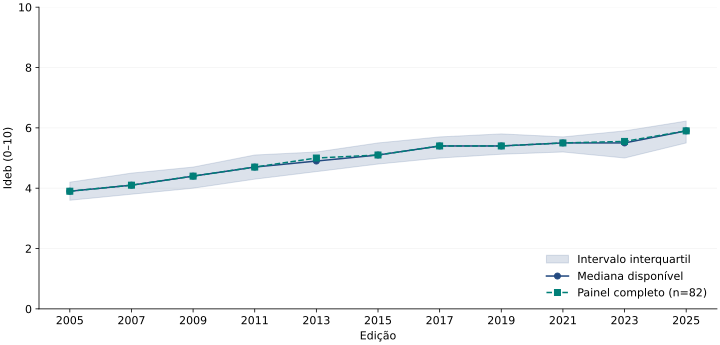
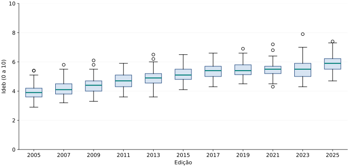
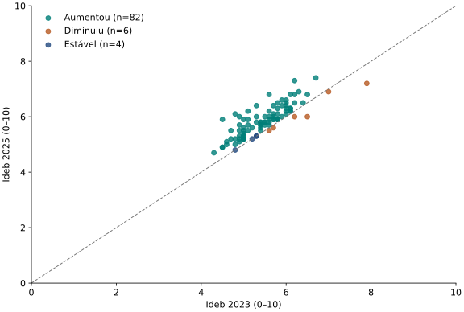
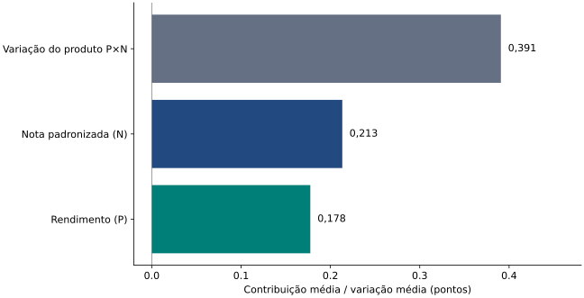

Evolução e dispersão do Ideb nas redes municipais do Rio de Janeiro: anos iniciais, 2005 a 2025
Resumo
Este estudo examina a evolução e a dispersão do Índice de Desenvolvimento da Educação Básica (Ideb) das redes municipais dos municípios do Rio de Janeiro, nos anos iniciais do ensino fundamental, entre 2005 e 2025. Utilizou-se uma cópia arquivada da planilha de resultados do Inep, cuja integridade interna foi verificada, permanecendo pendente a comparação dos bytes com o download oficial. Um pipeline determinístico em Python normalizou 1012 observações de 92 municípios em 11 edições, preservando 14 resultados ausentes sem imputação. A análise descreveu medianas, quartis e dispersão, comparou um painel completo de 82 municípios e examinou pares de 2023 e 2025. A mediana disponível passou de 3,90 para 5,90, enquanto o intervalo interquartil aumentou entre os extremos da série. Na comparação recente, 82 municípios apresentaram aumento, 6 redução e 4 estabilidade no índice divulgado. A decomposição simétrica do produto entre rendimento e nota padronizada identificou contribuições médias positivas dos dois componentes. Os resultados indicam avanço do nível central sem redução uniforme das diferenças entre redes municipais. O desenho descritivo não identifica causas, não mede desigualdades individuais e exige cautela na interpretação da edição de 2021. Código, metadados, figuras e rotinas de reprodução são disponibilizados para auditoria e reutilização.
Palavras-chave: Ideb; educação básica; Rio de Janeiro; análise exploratória; Python; princípios FAIR.
1. Introdução
A qualidade da educação básica é um problema público que exige acompanhar tanto os níveis alcançados quanto as diferenças entre redes de ensino. O Ideb reúne fluxo escolar e desempenho no Sistema de Avaliação da Educação Básica (Saeb). Seu caráter sintético facilita o acompanhamento, mas também exige examinar os componentes: um aumento do índice não representa necessariamente uma melhora equivalente de aprendizagem.
O recorte compreende as redes municipais dos 92 municípios fluminenses nos anos iniciais. A unidade observada é a rede municipal em cada município e edição, não o aluno, a escola individual nem o conjunto de escolas públicas do território. Os municípios recebem o mesmo peso na descrição; redes maiores não têm peso adicional. O estudo utiliza somente essa base, sem atribuir diferenças a fatores socioeconômicos que não foram medidos.
- RQ1. Como evoluiu o nível central do Ideb nas redes municipais fluminenses entre 2005 e 2025?
- RQ2. Como variou a dispersão dos resultados entre municípios ao longo das edições?
- RQ3. Como mudaram o Ideb e os componentes rendimento e nota padronizada nos mesmos municípios entre 2023 e 2025?
Essas perguntas organizam a sequência de ingestão, estatística descritiva e comunicação visual. A proposta é produzir respostas auditáveis e uma publicação que possa ser reproduzida por outras turmas.
2. Metodologia e pipeline de dados
2.1. Fonte, recorte e procedência
O catálogo oficial do Inep organiza os resultados por abrangência territorial e etapa. Selecionou-se divulgacao_anos_iniciais_municipios_2025.zip, que contém XLSX, ODS e manifesto MD5. A planilha IDEB_AI_MUNICÍPIOS possui cabeçalhos técnicos na linha 10, 133 colunas e 14.517 registros município/rede. Aplicaram-se os filtros SG_UF = RJ e REDE = Municipal. A categoria Pública é uma agregação distinta e não foi somada à Municipal.
Limitação de procedência. A entrada foi obtida de uma cópia arquivada pelo portal Transparência Política, registrada em 9 de novembro de 2026. O SHA-256 coincide com o registro da coleta e os MD5 internos conferem. Essas verificações atestam consistência da cópia; a correspondência com os bytes do arquivo oficial continua pendente por falhas de acesso ao servidor do Inep. Nenhuma licença nova é atribuída ao dado original. A proveniência completa distingue fonte primária e endereço de obtenção.
2.2. Tratamento e validações
O XLSX é lido com pandas e openpyxl, preservando os valores como objetos e desativando a interpretação automática de ausências. Linhas sem código municipal de sete dígitos são reconhecidas como títulos/notas e excluídas da tabela de observações. Os códigos permanecem texto. Converte-se vírgula decimal em ponto e exigem-se valores numéricos ou marcadores conhecidos. Marcadores inesperados interrompem a execução.
Não há imputação, exclusão automática de valores extremos nem alteração do arquivo bruto. Cada métrica numérica acompanha uma coluna _original com a representação lida ou o marcador de ausência. ND indica participação insuficiente; - é mantido sem atribuição de uma causa específica. Metas existem somente de 2007 a 2021; suas células vazias em 2005, 2023 e 2025 não são resultados faltantes de avaliação. Aprovações percentuais e rendimento proporcional são tratados separadamente.
# Trecho de src/etl.py; ausência não vira zero nem mediana
text = series.astype(str).str.strip()
values = pd.to_numeric(
text.str.replace(",", ".", regex=False), errors="coerce"
)
unexpected = text[values.isna() & ~text.isin(MISSING)].unique()
if len(unexpected):
raise ValueError(f"Valores não reconhecidos: {unexpected.tolist()}")A persistência usa CSV comprimido em gzip, UTF-8, ordenação estável e data fixa no cabeçalho de compressão. Verificam-se o hash da entrada, o schema, a unicidade da chave, as faixas das métricas e a compatibilidade entre Ideb e P × N, com tolerância de 0,0501 ponto pelo arredondamento da fonte. As 998 observações completas atendem a essa verificação.
2.3. Estratégia analítica
Calculam-se mediana, média simples entre municípios, quartis com interpolação linear, intervalo interquartil (IQR = Q3 − Q1) e desvio-padrão populacional (divisor n). O conjunto disponível muda por edição; por isso, a tendência também é calculada em um painel dos 82 municípios com Ideb nas onze edições. Esse painel reduz mudanças de composição, mas seleciona redes com divulgação contínua e não corrige todo possível viés de ausência.
Nos boxplots, as caixas representam Q1 a Q3 e as hastes alcançam os valores observados dentro de 1,5 IQR dos quartis. Pontos além das hastes são extremos descritivos, não erros comprovados, e permanecem na análise. Não se aplicam testes de significância nem modelos causais.
Para 2023 a 2025, a junção um a um por código municipal produz 92 pares com Ideb, P e N disponíveis. A variação do produto é decomposta simetricamente: Δ(PN) = N̄·ΔP + P̄·ΔN, em que as barras representam a média dos dois anos para cada município. Trata-se de uma identidade algébrica que distribui o termo de interação igualmente; ela não estima efeitos causais. A variação do produto não coincide exatamente com a do Ideb divulgado devido ao arredondamento.
As figuras vetoriais e versões interativas são exportadas pelo mesmo código que gera as tabelas. A página oferece SVG imediatamente e carrega Plotly localmente apenas quando solicitada a interação, sem depender de CDN.
3. Resultados e discussão
3.1. RQ1: Evolução do nível central
A mediana das redes com resultado disponível passou de 3,90 em 2005 para 5,90 em 2025. No painel completo, as medianas nos mesmos extremos são 3,90 e 5,90. A comparação sustenta um avanço do nível central nos extremos mesmo quando a composição é mantida. Ela não significa crescimento contínuo em todos os intervalos nem melhora em todas as redes.

O nível municipal evita que uma única média territorial esconda diferenças entre redes. A mediana atribui igual importância a cada município e resiste à influência de extremos, mas não informa quantos estudantes estão em cada situação. Não deve ser chamada de “Ideb do estado do Rio de Janeiro”, pois o indicador oficial agregado tem outra construção.
3.2. RQ2: Dispersão e cobertura
O IQR aumentou de 0,600 para 0,725, e o desvio-padrão passou de 0,533 para 0,576. As distribuições mostram que o avanço do nível central não equivale a uma convergência uniforme dos resultados. A dispersão descreve diferenças entre índices municipais; não mede diretamente desigualdade entre alunos, condições de ensino ou oportunidades educacionais.

| Edição | Válidos | Ausentes | Mediana | Q1 | Q3 | IQR | DP |
|---|---|---|---|---|---|---|---|
| 2005 | 88 | 4 | 3,900 | 3,600 | 4,200 | 0,600 | 0,533 |
| 2007 | 91 | 1 | 4,100 | 3,800 | 4,500 | 0,700 | 0,477 |
| 2009 | 91 | 1 | 4,400 | 4,000 | 4,700 | 0,700 | 0,552 |
| 2011 | 91 | 1 | 4,700 | 4,300 | 5,100 | 0,800 | 0,513 |
| 2013 | 91 | 1 | 4,900 | 4,550 | 5,200 | 0,650 | 0,546 |
| 2015 | 92 | 0 | 5,100 | 4,800 | 5,500 | 0,700 | 0,508 |
| 2017 | 89 | 3 | 5,400 | 5,000 | 5,700 | 0,700 | 0,534 |
| 2019 | 90 | 2 | 5,400 | 5,125 | 5,800 | 0,675 | 0,513 |
| 2021 | 91 | 1 | 5,500 | 5,200 | 5,700 | 0,500 | 0,465 |
| 2023 | 92 | 0 | 5,500 | 5,000 | 5,900 | 0,900 | 0,610 |
| 2025 | 92 | 0 | 5,900 | 5,500 | 6,225 | 0,725 | 0,576 |
Baixar tabela completa em CSV. Há 14 células município/edição sem Ideb ao longo da série. A cobertura é completa em 2015, 2023 e 2025. A ausência não foi interpretada como desempenho nulo. Em algumas edições, P está disponível mesmo quando N e Ideb não estão; portanto, a cobertura é verificada individualmente por variável.
3.3. RQ3: Comparação pareada e componentes
Entre 2023 e 2025, 82 municípios (89,1%) aumentaram o Ideb divulgado, 6 diminuíram e 4 mantiveram o resultado. A variação média entre os 92 pares foi 0,385 ponto; a mediana das variações foi 0,35. A estabilidade refere-se ao índice arredondado divulgado e pode coexistir com alterações em seus componentes.

A média das mudanças de P foi 2,94 pontos percentuais; a de N foi 0,23 ponto na escala padronizada. Essas grandezas possuem unidades diferentes e não devem ser comparadas diretamente. Convertidas pela decomposição para pontos do produto, as contribuições médias foram 0,178 para rendimento e 0,213 para nota. Sua soma corresponde à variação média de 0,391 ponto no produto P×N.

Baixar comparação municipal e decomposição em CSV. A participação positiva dos dois termos na média não implica que ambos tenham melhorado em cada município. A nota padronizada resume o desempenho observado no Saeb; sua mudança pode refletir também participação e composição dos avaliados. A decomposição identifica como os fatores entram na fórmula, sem explicar por que mudaram.
3.4. Contexto e limites interpretativos
As notas da própria planilha remetem à documentação de 2021 para o impacto da pandemia. Mudanças de participação e de aprovação exigem cautela nessa edição. O estudo mantém 2021 na série e não atribui à pandemia, a políticas específicas ou à gestão municipal uma variação causal estimada. Os documentos PDF complementares não integraram a coleta auditada e devem ser consultados na continuidade do trabalho.
O recorte agrega instituições e alunos em redes municipais. Não há controles por nível socioeconômico, matrículas, localização escolar ou características dos estudantes. Não é possível derivar rankings de qualidade causal ou explicar diferenças estruturais com esta única fonte. O arredondamento do Ideb limita a leitura de mudanças pequenas; a análise de componentes complementa, mas não elimina, essa limitação.
4. Conclusão
A RQ1 foi respondida pelo aumento da mediana de 3,90 para 5,90, com os mesmos níveis nos extremos do painel completo. A RQ2 mostrou que o IQR aumentou, impedindo interpretar o avanço central como redução uniforme da dispersão. Na RQ3, 82 das 92 redes aumentaram o índice entre 2023 e 2025, e rendimento e nota padronizada apresentaram contribuições médias positivas à mudança do produto.
A contribuição do trabalho é tornar essas conclusões rastreáveis ao arquivo bruto, às regras de conversão e às tabelas geradas. O pipeline preserva ausências e permite examinar tanto a cobertura disponível quanto o painel completo. As limitações incluem a origem em cópia de terceiros ainda não comparada aos bytes oficiais, a agregação municipal, o arredondamento e a impossibilidade de inferência causal.
Trabalhos futuros podem confrontar a entrada com o download oficial, aprofundar as notas metodológicas, comparar outras etapas e redes e integrar matrículas ou indicadores socioeconômicos mediante chaves e períodos compatíveis. Qualquer ponderação ou explicação adicional deve ser explicitada como novo desenho de pesquisa.
5. Disponibilidade dos dados e declaração FAIR
Findable. Repositório público com autoria, palavras-chave, fonte primária, proveniência e CITATION.cff. O GitHub fornece endereço persistente enquanto o projeto existir; não atribuímos DOI ao depósito.
Accessible. Código, entrada fixada e artigo disponíveis sem credenciais pagas. O ZIP versionado permite reproduzir o estudo sem depender da disponibilidade momentânea do servidor do Inep. A leitura inicial da página usa figuras SVG e não exige JavaScript.
Interoperable. CSV UTF-8 comprimido, dicionário com tipos, unidades e marcadores, códigos municipais de sete dígitos e nomes de variáveis documentados. JSON e SVG apoiam a publicação e o reuso.
Reusable. Código sob MIT; texto e figuras autorais sob CC BY 4.0. Dados originais e derivados mantêm a atribuição à fonte e as condições de origem, sem relicenciamento automático. Dependências estritamente congeladas, versão do Python e hash da entrada documentados. Esta declaração atende à rubrica da disciplina e não constitui certificação formal de todos os princípios FAIR.
Reprodução integral: Windows / PowerShell
git clone https://github.com/pedro-art2611/Projeto-Pr-ticoG2.git
cd Projeto-Pr-ticoG2
py -3.14 -m venv .venv
.\.venv\Scripts\python.exe -m pip install -r requirements.txt
.\.venv\Scripts\python.exe -m src.report
.\.venv\Scripts\python.exe -m unittest discover -s tests -v
.\.venv\Scripts\python.exe scripts/verify_reproducibility.py
.\.venv\Scripts\python.exe scripts/execute_notebook.py
.\.venv\Scripts\python.exe -m http.server 8000 --directory docsAbra http://localhost:8000 para explorar a página localmente. Em Linux/macOS, use python3.14 para criar o ambiente e .venv/bin/python nos demais comandos. O notebook pode ser aberto em um editor com suporte a Jupyter.
Consulte o dicionário, o README e o registro de validação. O arquivo reproducibilidade.json permite comparar hashes dos produtos gerados.
6. Referências
- INSTITUTO NACIONAL DE ESTUDOS E PESQUISAS EDUCACIONAIS ANÍSIO TEIXEIRA (INEP). Ideb: resultados 2005 a 2025. Brasília, DF: Inep, 2026. Disponível em: catálogo oficial de resultados. Acesso em: 11 nov. 2026.
- INEP. Índice de Desenvolvimento da Educação Básica (Ideb). Disponível em: página institucional do indicador. Acesso em: 11 nov. 2026.
- TRANSPARÊNCIA POLÍTICA. Cópia arquivada: divulgação dos anos iniciais: municípios, 2025. Disponível em: registro da cópia utilizada. Obtenção registrada em: 9 nov. 2026. Fonte de obtenção secundária; ver proveniência.
- WILKINSON, M. D. et al. The FAIR Guiding Principles for scientific data management and stewardship. Scientific Data, v. 3, artigo 160018, 2016. DOI: 10.1038/sdata.2016.18.
- PANDAS DEVELOPMENT TEAM. pandas documentation. Disponível em: documentação oficial. Acesso em: 11 nov. 2026. Versão utilizada: consulte requirements.txt.
- NUMPY DEVELOPERS. NumPy documentation. Disponível em: documentação oficial. Acesso em: 11 nov. 2026.
- PLOTLY TECHNOLOGIES INC. Plotly Python graphing library: interactive HTML export. Disponível em: documentação de exportação HTML. Acesso em: 11 nov. 2026.
- MATPLOTLIB DEVELOPMENT TEAM. Matplotlib documentation. Disponível em: documentação oficial. Acesso em: 11 nov. 2026.
- OPENPYXL DEVELOPERS. openpyxl documentation. Disponível em: documentação oficial. Acesso em: 11 nov. 2026.